２０２４年はミルモグッズラッシュが続きます！（うれしい悲鳴）
今度は雑貨ショップのサンキューマートより、ミルモでポン！とのコラボ雑貨が発売されました！
Web先行予約受付は４月１１日から開始していて、サンキューマートの店頭にも４月２６日より商品が並べられました。
１日遅れですが、４月２７日に東京都内のお店の様子を見てまわり、またいくつかの商品をゲットしましたのでレポートいたします！
（スイパラのミルモコラボの合間に見て回ると言う、数年前には想像もできなかった贅沢な行動ですね^^）
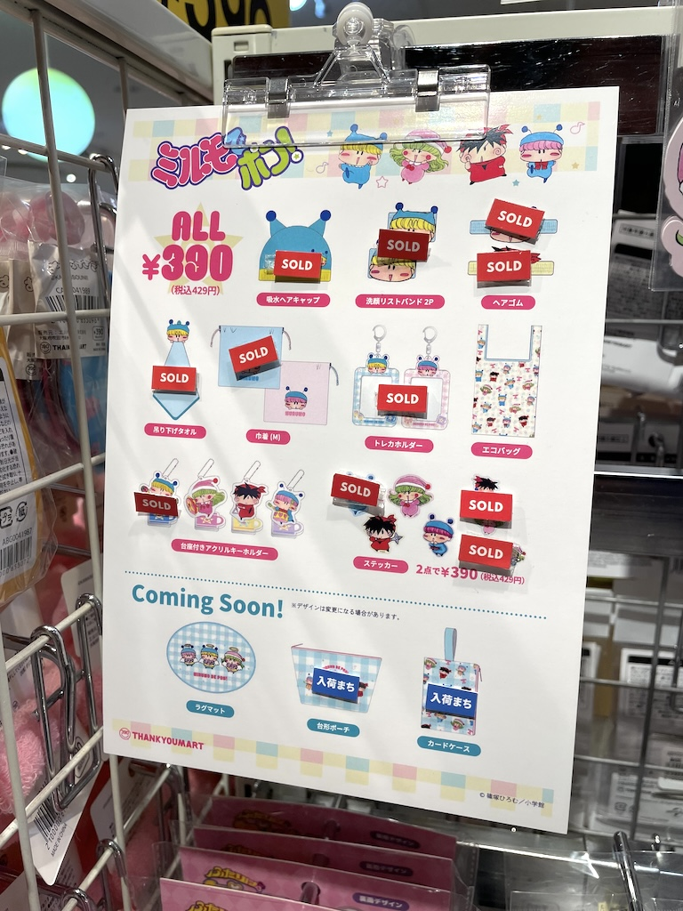
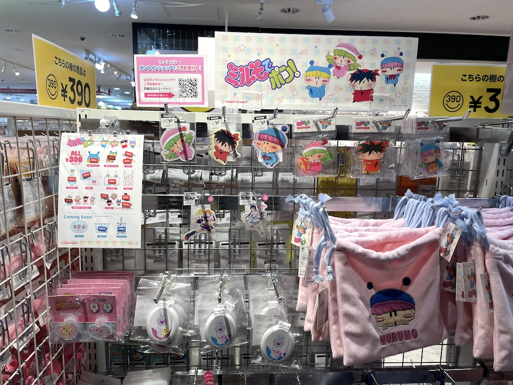
上２枚はスイパラコラボが行われている上野ABAB店の様子です。
「SOLD」の札がすでにたくさん！
令和の時代にミルモグッズ人気ありすぎませんか！？
巾着やステッカーやアクリルキーホルダーはミルモだけが売り切れなので、やっぱりこの作品の顔でもあるミルモが一番人気のようです。
売れ残っている大量のムルモの巾着からムルモの悔しさのオーラを感じてしまう〜〜っ
次に新宿店に行ったら、なんと全商品が完売らしく、ミルモのコーナーごとなくなっていました(^◇^;)
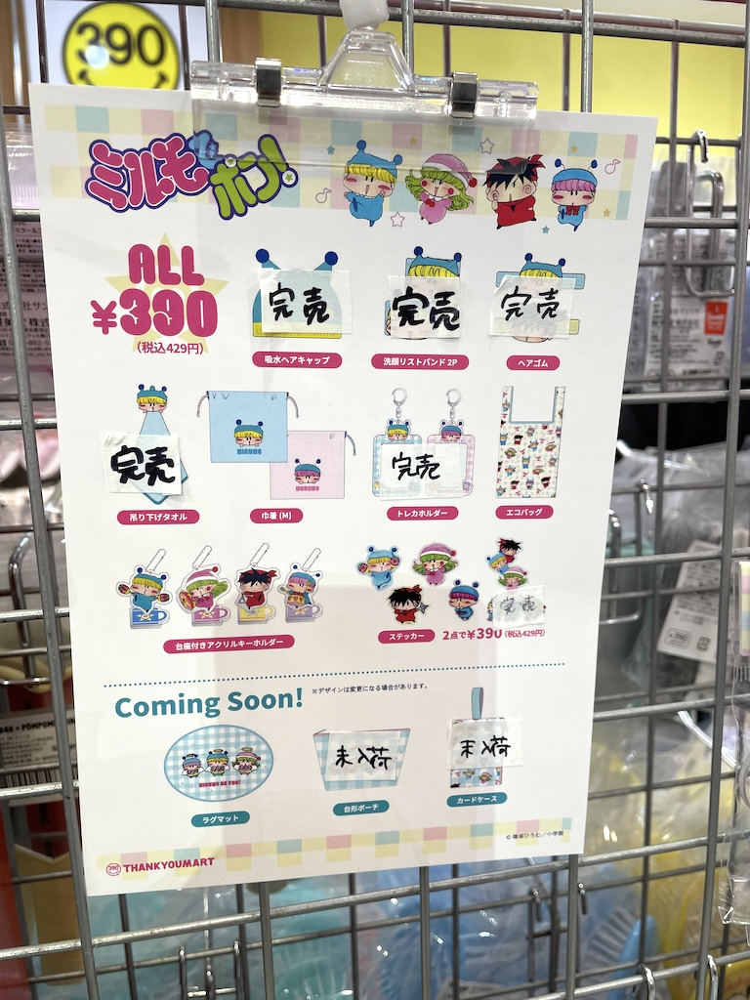
続いて原宿の竹下通りに面した原宿ALTA店へ。
上野より多少の余裕はありましたが、やっぱりミルモのヘアキャップやヘアゴムは売り切れ・・。
続いて原宿表参道店へ↓
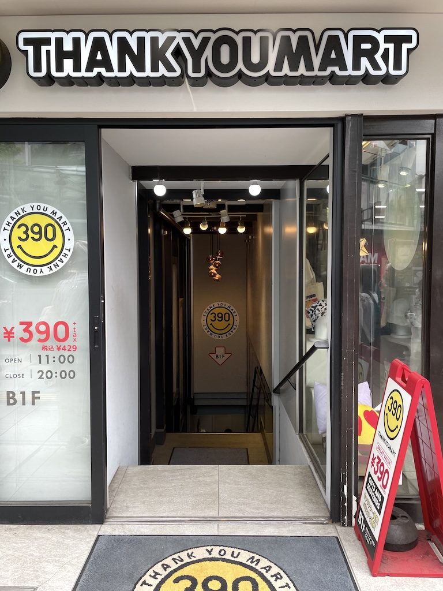
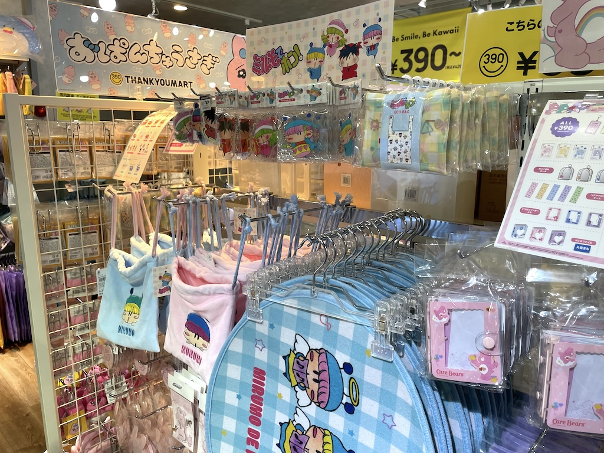
原宿ALTA店と同じような状況でした。
完売の商品は初日に売り切れになってしまったのかもしれませんね。
↓４月２８日に私の地元・国分寺店にも行ってきました。
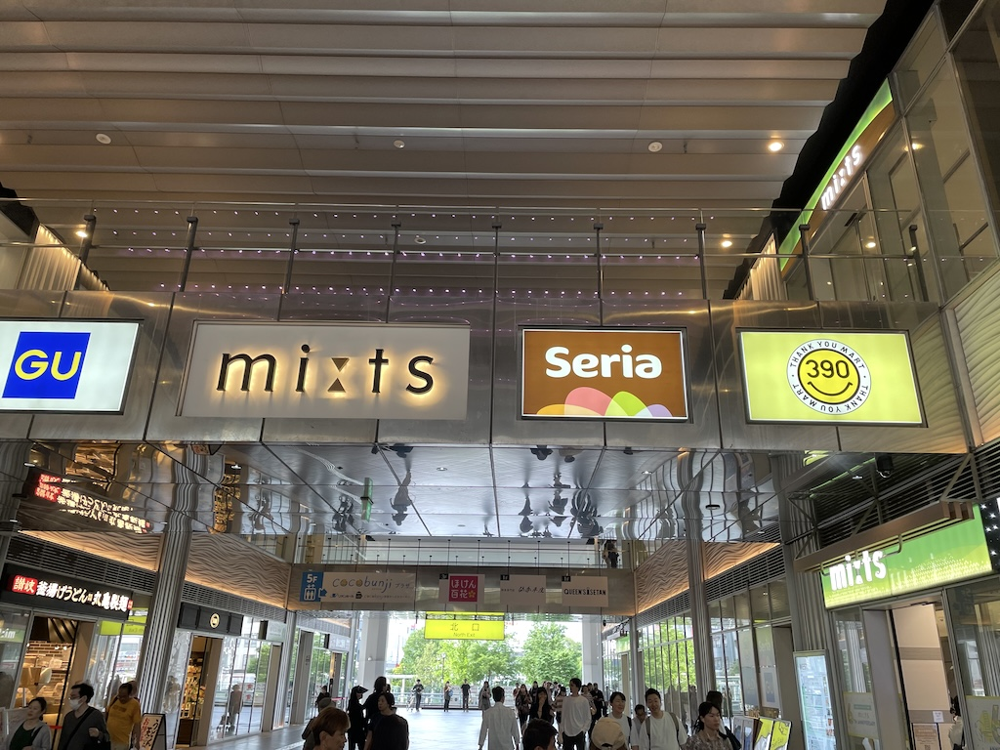
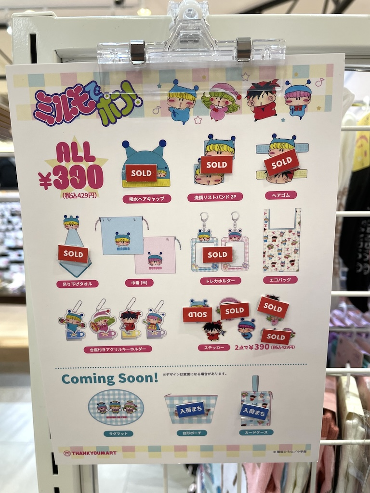
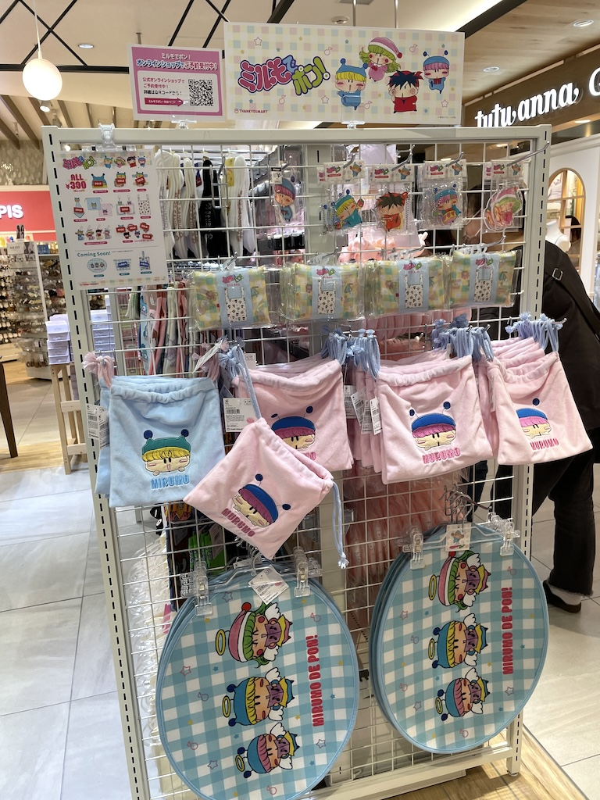
やっぱり同じような状況ですね(^^;
私はエコバッグが真っ先に売り切れになるかなぁと思っていたけど、実際はトレカホルダーの方がもっと人気でびっくりしました。
ミルモのトレカホルダーにお気に入りの写真を入れる用途に使われるのかな？
ここからは、こやまるが４月２７日にゲットした一部の商品を紹介いたします。
今回ゲットできなかった一部の商品はWeb予約済みですので、届き次第その２としてレポートいたします〜
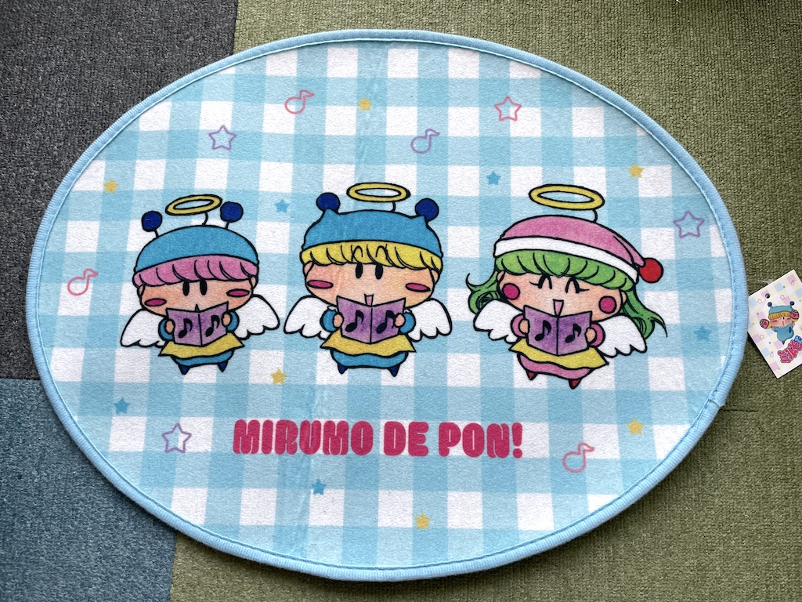
まずはラグマットです。
ミルモファンは果たしてこの３人の妖精を足で踏むことができるのだろーか？（私にはできない）
ミルモとムルモの巾着です。
手触りがとても気持ちよいです。
大きさ的に、スマホのモバイルバッテリーやケーブル類を入れるのにちょうどよさそう^^
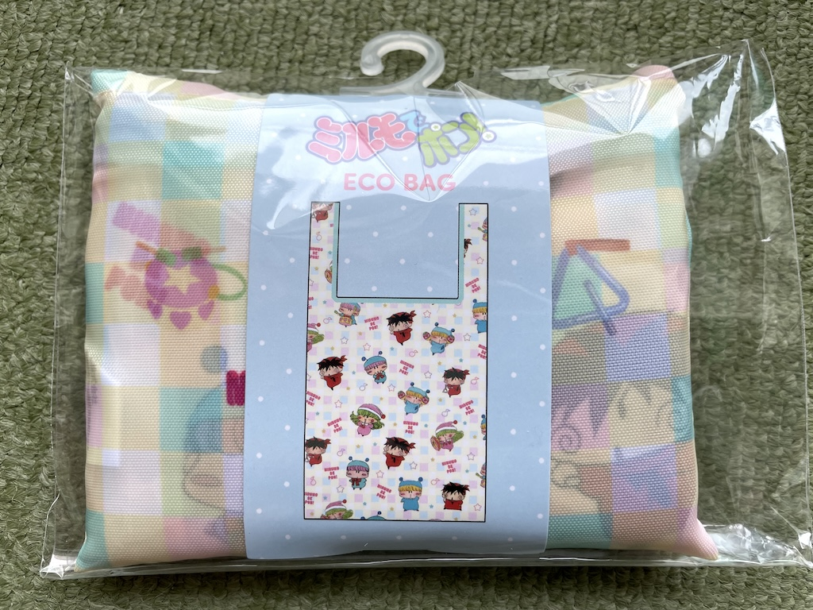
ミルモのエコバッグです。
妖精たちがあちこちに描かれているのがかわいいですよね〜
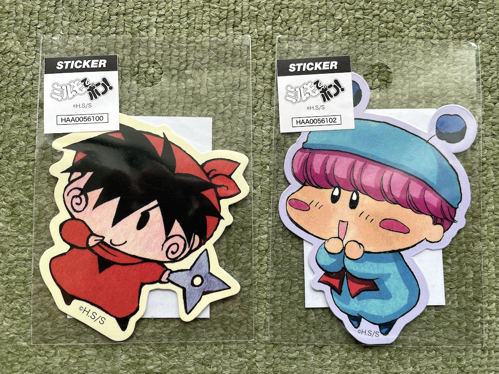
妖精たちのステッカーです（ステッカーは２枚で３９０円）
ノートPCに貼ると目立つこと間違いなし！
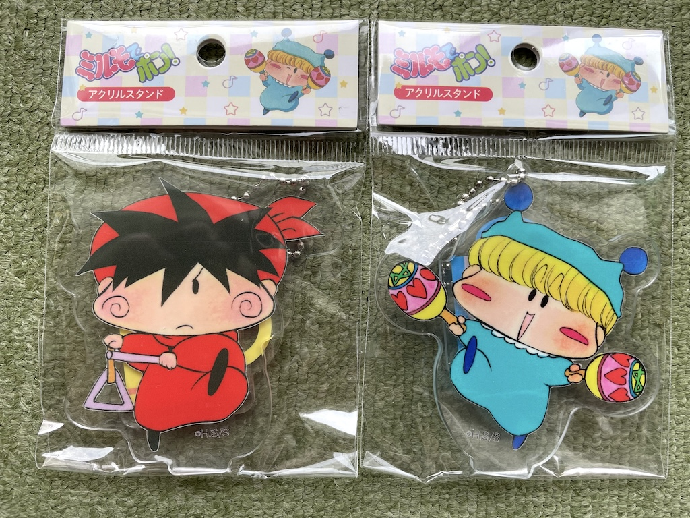
台座付きアクリルキーホルダー。
キーホルダーにもスタンドにもなる二刀流です。
以下はサンキューマート公式のXでのポストになります。
どの商品も大人気ですのでゲットまだの方はお店へGoです！
🩵4/26発売🩵
— サンキューマート(公式) (@thankyoumart) April 22, 2024
『ミルモでポン！』との初コラボが新登場👏
“エモい”キャラクター達が大集合🎶
🛒販売開始日🛒
・店頭販売：4/26～入荷順次
・WEB先行予約：実施中
※入荷のタイミングは店舗によって異なります。
最新情報は各店舗のXにてご確認ください pic.twitter.com/TSbDVGlHdE
(2024/4/29)